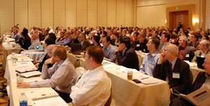
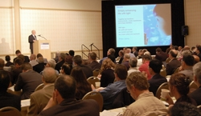
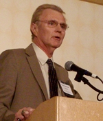
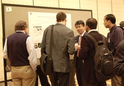
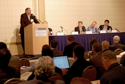
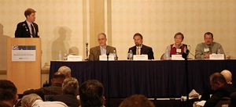
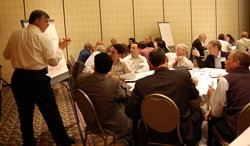
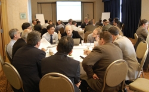
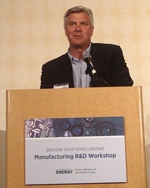

More than 250 industry leaders from all corners of the supply chain – including chip makers, luminaire manufacturers, material and equipment suppliers, packagers, luminaire testers, and makers of testing equipment – gathered in San Jose, CA, April 21-22, 2010, to share insights, ideas, and updates at the second annual Solid-State Lighting (SSL) Manufacturing R&D Workshop, hosted by DOE. This workshop is a key part of an initiative launched by DOE in 2009 to enhance the quality and lower the cost of SSL products through improvements in manufacturing equipment and processes and to foster a significant manufacturing role in the U.S. This year in San Jose, attendees explored a wide range of related topics and focused on reexamining and updating the DOE Manufacturing R&D Roadmap.
DOE SSL Portfolio Manager James Brodrick kicked off Day 1 by explaining that the Manufacturing Roadmap, which resulted from 2009's inaugural SSL Manufacturing R&D Workshops, complements and extends DOE's SSL R&D Multi-Year Program Plan. It identifies specific manufacturing R&D areas of need for LEDs and OLEDs, defining clear plans, timetables, and metrics to address major barriers. He noted that whereas last year's roadmap defined where we wanted to go, this year's focus is on what needs to be done to get there. Brodrick emphasized the participatory nature of the workshop and told attendees, "Your guidance is very, very important."
Vrinda Bhandarkar of Strategies Unlimited followed with an update on SSL manufacturing trends worldwide. Outlining the high-brightness (HB) LED industry structure, she noted that most HBLEDs are packaged in Asia, and observed that although design approaches for LED fixtures and light engines are becoming more sophisticated, product interfaces haven't been standardized, and poor quality is still a major issue. Bhandarkar made the point that many LED lighting fixtures are designed in the U.S. or Europe, but a high percentage are made in China, due in part to government incentives, but also fostered by a highly developed infrastructure that often allows a single contractor to do the entire job, as well as China's proximity to the supply chain and high-growth markets.
Next, Jim Anderson of Philips Color Kinetics discussed the impact of infrastructure on global manufacturing decisions. He predicted that LED lighting will dominate the market by 2020, and that "smart systems" with integrated controls and sensors will play an increasingly important role, along with field-serviceable modular components. Anderson said he thinks there will be a significant SSL manufacturing base in North America, with luminaires being finished here using components that are made in other regions. In reviewing the infrastructure needed for SSL manufacturing success, he cited a network of universities, professional associations, and laboratories; a pool of relevant skills and talent; and project grants, funding, and tax incentives.
Research Previews
Each of the recipients of DOE's first eight SSL manufacturing R&D awards then gave a preview of what they plan to accomplish with their projects, which range in focus from epitaxy tools, to automated defect detection systems, to the design and setup of OLED manufacturing pilot lines. These awards, which total nearly $24 million in American Recovery and Reinvestment Act funding, were first announced in January 2010 and reflect DOE's new commitment to accelerate the adoption of SSL technology through manufacturing improvements that reduce costs and improve quality:
- Nag Patibandla of Applied Materials Inc. discussed his company's plans to develop an advanced epitaxial growth system for gallium nitride LED devices that will decrease operating costs, increase internal quantum efficiency, and improve binning yields.
- Jie Liu of GE Global Research described his company's plans to develop, within the next two years, a roll-to-roll solution-processing method for producing small-molecule OLEDs, using as a starting point an existing polymer-based machine.
- Anirudha Deshpande of GE Lumination talked about his company's plans to develop, design, and pilot advanced manufacturing methods for warm-white general-illumination LEDs, based on "remote phosphor" techniques.
- Srini Vedula of KLA-Tencor Corporation discussed the use of automated inspection to increase yield and decrease defects and cost in SSL manufacturing.
- Michael Craven of Philips Lumileds Lighting Company, LLC, described his company's plans to use nitride epitaxy on 150mm silicon substrates to produce low-cost, warm-white, high-performance general-illumination LEDs.
- Andy Hawryluk of Ultratech Inc. talked about his company's plans to adapt an existing lithography tool that was designed for the semiconductor industry for use in manufacturing high-brightness LEDs, in the process reducing capital expenditure and cost of ownership while increasing throughput and yield.
- Mike Hack of Universal Display Corporation talked about his company's plans to facilitate the growth of the embryonic OLED lighting industry by setting up a pilot OLED manufacturing line in the U.S. that will provide prototype lighting panels to U.S. luminaire manufacturers.
- Bill Quinn of Veeco Instruments described his company's plans to drive down the cost of high-brightness LEDs by implementing process simulation tools and temperature control methods to increase yield, and by improving temperature measurement and control.
Attendees got an opportunity to talk to these presenters one-on-one that evening at a poster session and reception sponsored by the Next Generation Lighting Industry Alliance (NGLIA) and Philips Lumileds Lighting. To kick off the reception, San Jose mayor Chuck Reed talked about his city's focus on clean technology, and NGLIA chair Keith Cook of Philips gave some background on NGLIA, an alliance of for-profit corporations formed to accelerate SSL development through government-industry partnership, and invited attendees to join.
Designing for Manufacturability
A panel moderated by Steve Bland of SB Consulting discussed ways in which industry can improve the design of SSL products to make them more manufacturable, focusing on what's currently being done along those lines, and how such changes might lead to cost reductions. Len Levy of OSRAM Sylvania reviewed a number of key elements that will accelerate SSL adoption and must influence its design, including flexibility, conversion, interoperability, and infrastructure. In addition to designing products for manufacturability, he emphasized making test requirements specific to SSL sources and electronics, utilizing supply chain optimization processes, focusing on factory systems and operational processes, and conducting cycle-time sensitivity analyses.
Mark Hodapp of Philips Lumileds Lighting discussed evaluating the lifetime behavior of LED systems, making the point that understanding component reliability enables LED system cost optimization, and noting the usefulness of good reliability and maintenance models. He emphasized that the LM-80 test report alone is not sufficient for determining system reliability because the data needs to be extrapolated to the luminaire's lifetime, and stressed that manufacturers should be able to provide lumen maintenance and catastrophic failure models at specified user conditions.
Paul Pickard of Cree presented an integrated approach to LED manufacturing as one way to drive down costs. He explained that simplifying SSL luminaires through an integrated approach in the areas of LED chips; components; and thermal, optical, and electrical design can provide high quality and performance at low cost, noting that subsystem optimization without regard to system integration won't deliver the expected cost reductions. Pickard stated that while standardizing can simplify the process of developing an SSL product, standardizing too much too early can stifle innovation and unnecessarily drive up costs.
Yuan-Sheng Tyan of TCE*OLED discussed how to reduce SSL manufacturing cost by designing the device to have low material cost and high yield. He focused on doing this through incorporating four technology elements: monolithic structure, tandem architecture, internal extraction structure, and short reduction layer. Tyan made the point that cost reduction cannot compromise fitness to use, and that in high-volume manufacturing, materials cost and yield determine the ultimate cost. "We have to make devices that are competitive against all the other lighting technologies," he stressed.
Proposal Tips
Next, Brian Dotson of the National Energy Technology Laboratory offered some straightforward guidance on how to assemble and deliver a comprehensive proposal for DOE SSL funding. He reviewed the application evaluation process and presented guidelines and helpful suggestions on preparing an application – such as providing clearly described research and goals, offering ideas that are responsive to the funding announcement's areas of interest, and thoroughly addressing all aspects of the evaluation criteria.
Changes in SSL Manufacturing
Day 2 began with a panel discussion on how SSL will change luminaire manufacturing. The discussion was moderated by Morgan Pattison of SSLS, Inc., and focused on how the present infrastructure will change; what the implications are of moving to a more complex, integrated system; how to ease this transition; and what the special needs of smaller luminaire manufacturers are.
Dennis Bradley of GE Lighting Solutions discussed the new manufacturing environment for SSL. "I really believe that U.S. manufacturing has become more viable with solid-state lighting luminaires," he said, observing that the percentage of labor content is very small compared to the overall cost. Bradley made the point that overall system reliability depends on multiple factors and not just on the LEDs, and emphasized the importance of serviceability. He gave the opinion that market expectations for SSL performance are "staggeringly high," and said that products don't have to outperform incumbent technology in every single respect.
Eric Haugaard of BetaLED offered the perspective of a manufacturer that's migrated to SSL from high-intensity discharge (HID) technology for outdoor lighting applications. He discussed product performance expectations for SSL luminaires, noting that longer service interval requirements require manufacturers to pay attention to such aspects as finish, leak resistance, and long-life materials. Haugaard emphasized the value of scalability, which allows for small increments of change in luminous intensity, as well as the importance of performance assurance and documentation.
Peter Ngai of Acuity Brands Lighting focused on OLED luminaires, which he explained are simpler in structure than LED and conventional luminaires. He compared the cost of lamp replacement relative to luminaire cost for the three technologies (-10% for conventional, 30%+ for LED, 50%+ for OLED), and observed that the higher this relative cost, the lower the likelihood of users accepting a high frequency of lamp replacement. Ngai predicted that the life of SSL light sources will gradually increase until they last as long as the luminaire's service life, but that the service life won't exceed 10 years or 40,000 hours, because rapid technological advances during that interval will make users want to replace previously installed systems.
Michael Bremser of Permlight Products Inc. described a number of problems and potential solutions in key areas of SSL manufacturing. For example, he pointed out that although luminaire manufacturers aren't set up to make SSL fixtures, and that component suppliers are looking for much higher volume than the current market warrants, standard light engines with standardized connections can help by minimizing soldering and physical connections. To deal with the problem of shortages of electrical components, Bremser suggested that luminaire manufacturers qualify a second source before there's an emergency, and that they forecast their needs accurately.
Updating the SSL Manufacturing R&D Roadmap
Next, Fred Welsh of Radcliffe Advisors previewed the proposed updates to the DOE SSL Manufacturing R&D Roadmap, which were based on feedback from a series of roundtable discussions held in March 2010. The roundtable reports are available on the SSL Technology Roadmaps.
The attendees then split up into separate LED and OLED track sessions, where they discussed these proposed updates in detail, exploring the related issues in depth. In order to enable richer discussion of the issues and make it easier for more voices to be heard, the track sessions were themselves split up into issue-specific subgroups. The input from these track sessions will be used to update the SSL Manufacturing R&D Roadmap and guide DOE planning for Manufacturing R&D solicitations. DOE expects to publish the updated roadmap in June, and issue the next Manufacturing R&D solicitation in summer 2010.
U.S. Manufacturing Needs
The workshop concluded with a panel discussion on U.S. SSL manufacturing equipment and infrastructure needs. "We'd like to see a significant role for SSL manufacturing in the United States," said moderator Brodrick. "Do we have the right people with the right talent? What can industry do to develop the right infrastructure? What's the proper level of automation?"
Chuck Berghoff of OptoElectronix kicked off the panel discussion with an examination of U.S. SSL manufacturing strategic considerations and issues. "We really have an opportunity here to create new companies, new businesses, new jobs, and a new industry here," he said. Berghoff made the point that although today's supply chain is global, the labor rate is a small component (3%-5%) of the end cost on a high-power solid-state light engine. He cited automation as a key to cost and quality control, and called for more standardization of components and subsystems. Berghoff also emphasized the importance of infrastructure as well as a good education system.
Tom Morrow of SEMI, the global association for the microelectronics supply chain, presented a snapshot of worldwide LED fabrication capacity, noting that the vast majority of facilities are in Asia but that half of the equipment and materials that support them are in the U.S. He said this is the way the U.S. can play a key role in SSL manufacturing – i.e., by supplying equipment and materials. "Equipment and materials companies in the United States are going to be critical enablers of that worldwide challenge of reducing fossil fuel usage," Morrow stated. He cited manufacturing cost reductions as being more significant for SSL at this point than efficiency improvements.
Mike Peanasky of Bridgelux discussed the challenges facing SSL manufacturers, approaching the subject from the point of view of a smaller company trying to break into large-scale production. He characterized the present state of LED manufacturing as "quite primitive," stating that fabrication isn't well-automated and that LED manufacturers face a lot of performance issues that are primarily materials-driven. Peanasky emphasized the importance of reducing the cost of the chip, and identified the lack of design rules for equipment suppliers as another major barrier. Noting the "huge capital costs" involved in SSL manufacturing, he cited a lack of government incentives in the U.S., compared with some Asian countries.
Bill Quinn of Veeco Instruments drew a comparison between radiofrequency power modules and InGaN LEDs. He reviewed the similarities in the two technologies, (e.g., the fact that they both are compound semiconductors), as well as the differences, (e.g., because the early uses of radiofrequency power modules were by the U.S. military, all of the manufacturers got their start with the help of government funding). Quinn observed that for radiofrequency power modules, the chip manufacturing has remained in the U.S., which he attributed in large part to the fact that radiofrequency design, unlike SSL design, is taught in U.S. universities.
Gopalan Rajeswaran of Moser Baer focused on new industry creation and the role of infrastructure, specifically for OLED technology, and described a DOE-funded R&D project his company is undertaking in collaboration with Universal Display Corporation to set up a pilot OLED manufacturing facility in the U.S. He advocated creating product awareness among consumers; establishing standards for product specifications and compliance; fostering the infrastructure through focused R&D, industry-government and intra-industry cooperation, and a robust materials supply chain; and offering financial incentives to offset upfront industry investments.
Brodrick concluded the two-day workshop by thanking participants for their input and participation. He noted an additional DOE SSL workshop in 2010 – the SSL Market Introduction Workshop in July – and also encouraged attendees to stay apprised of DOE SSL program activities by visiting www.ssl.energy.gov.